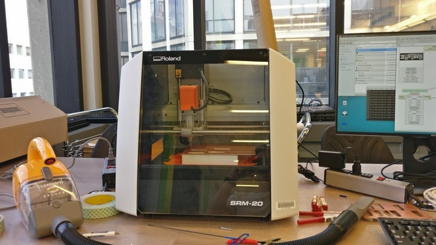
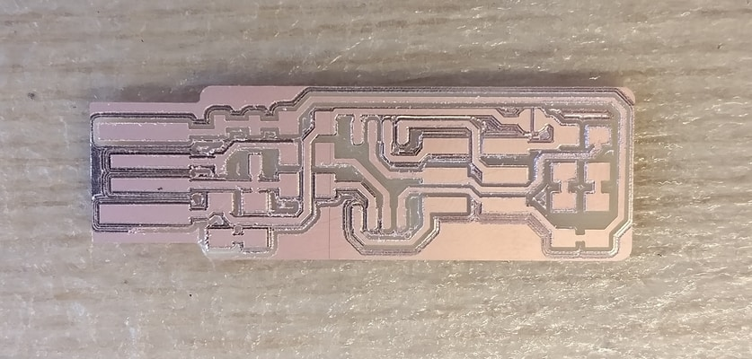
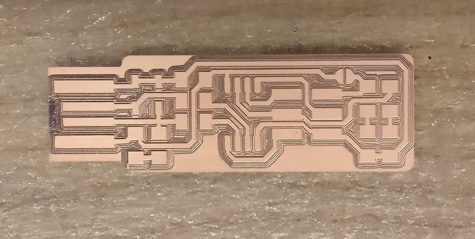
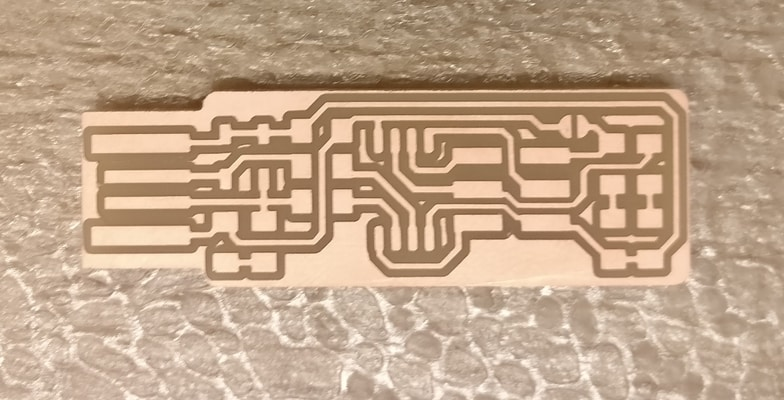
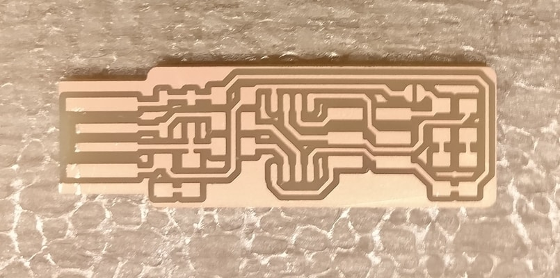
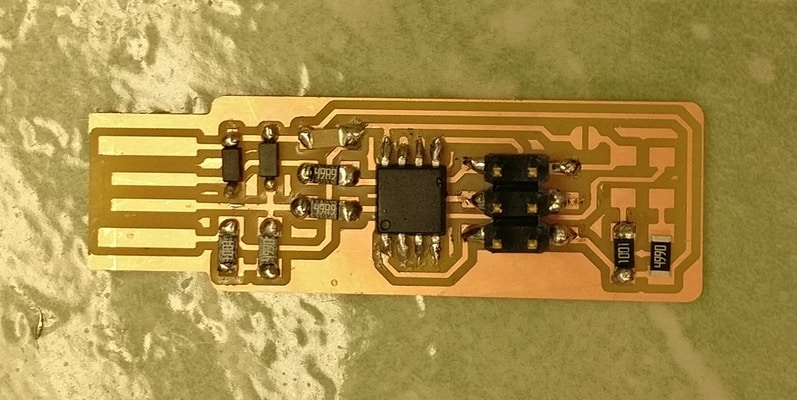
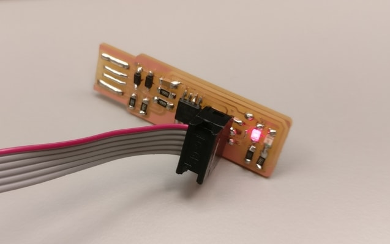

I followed the guide here.
The specific milling machine i used was a Roland SRM-20.
The endmills used were 1/64in for tracing and 1/32in for cutting.
My first few attempts actually failed. :(
 The endmill on the first one above seemed to not be calibrated correctly. Some time later I tried again. In the second one, the endmill seemed to have gone bad and wasn't able to cut properly.
Here is the one of my good attempts.
As per advice, I used a utility knife to remove the copper on the end. note the difference on the left.
The next step was to solder all the pieces onto the board.
Once connected, the red led should light up!
On my first try at connecting board, the led didn't light. It turns out I had soldered the LEDs on backwards. oops. Good thing I had also just learned how to remove solder.
I then followed the guide to properly program the board.